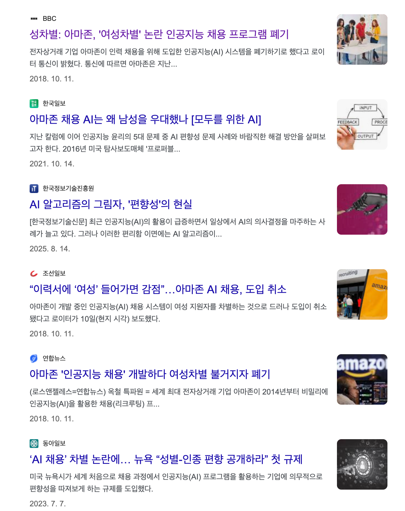
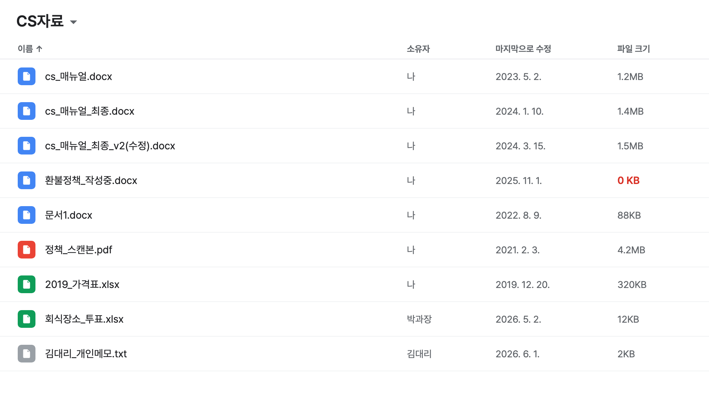
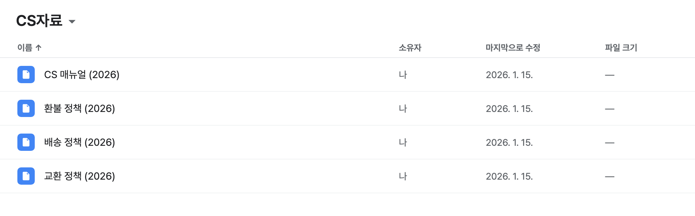
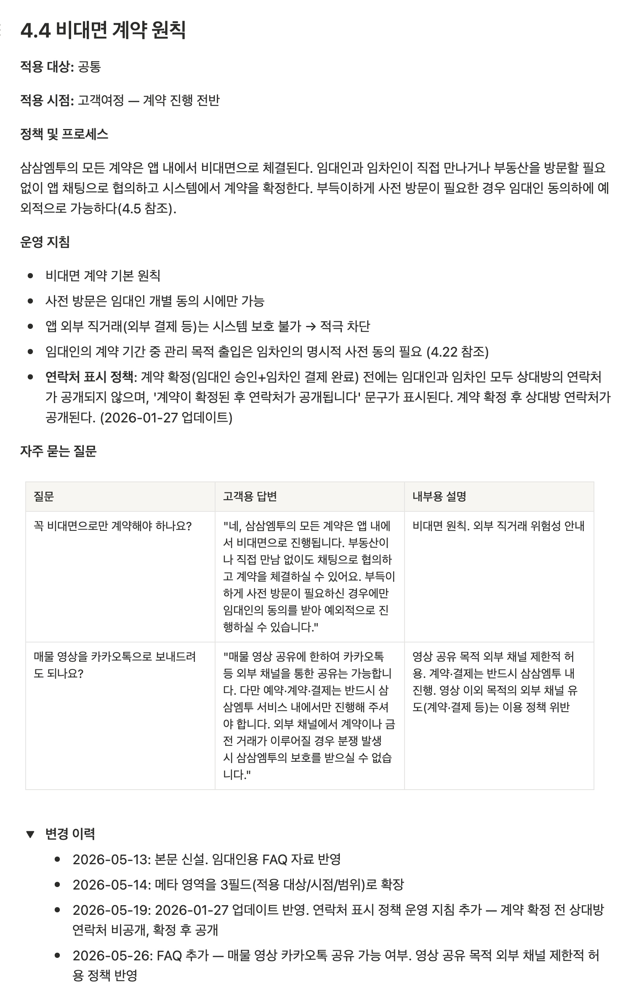
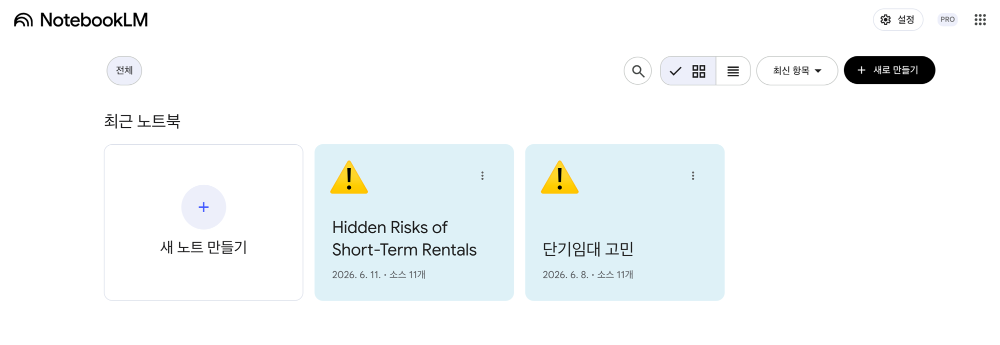
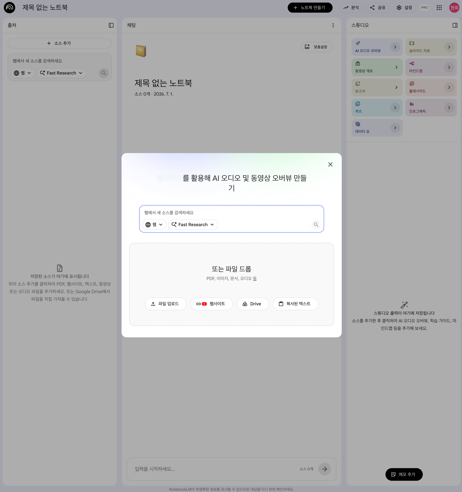
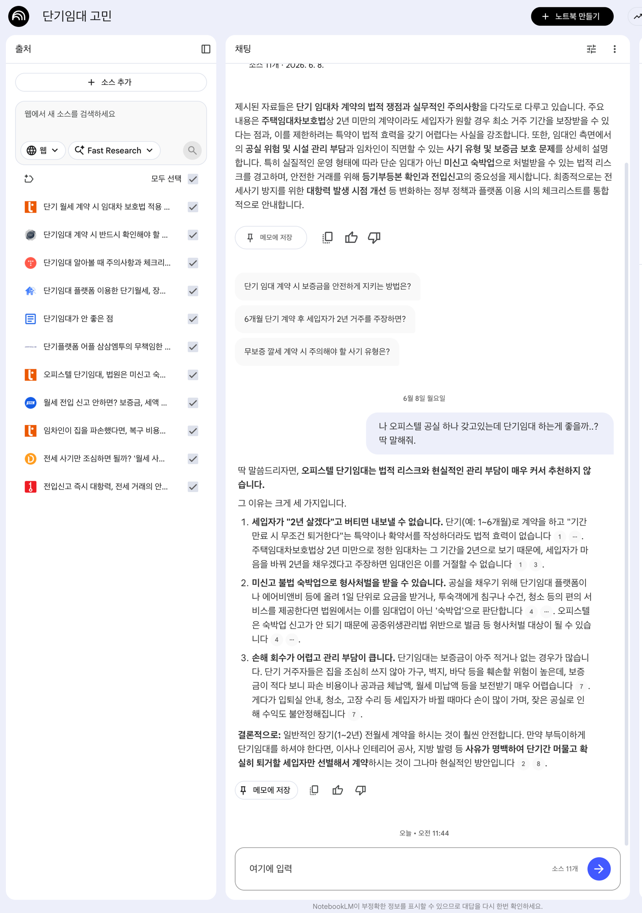
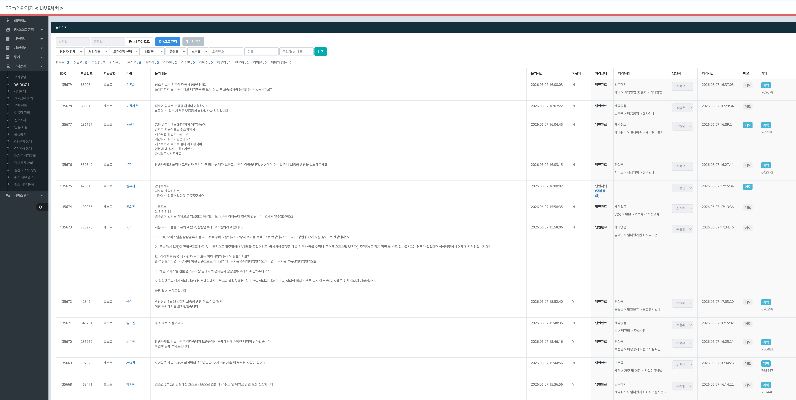
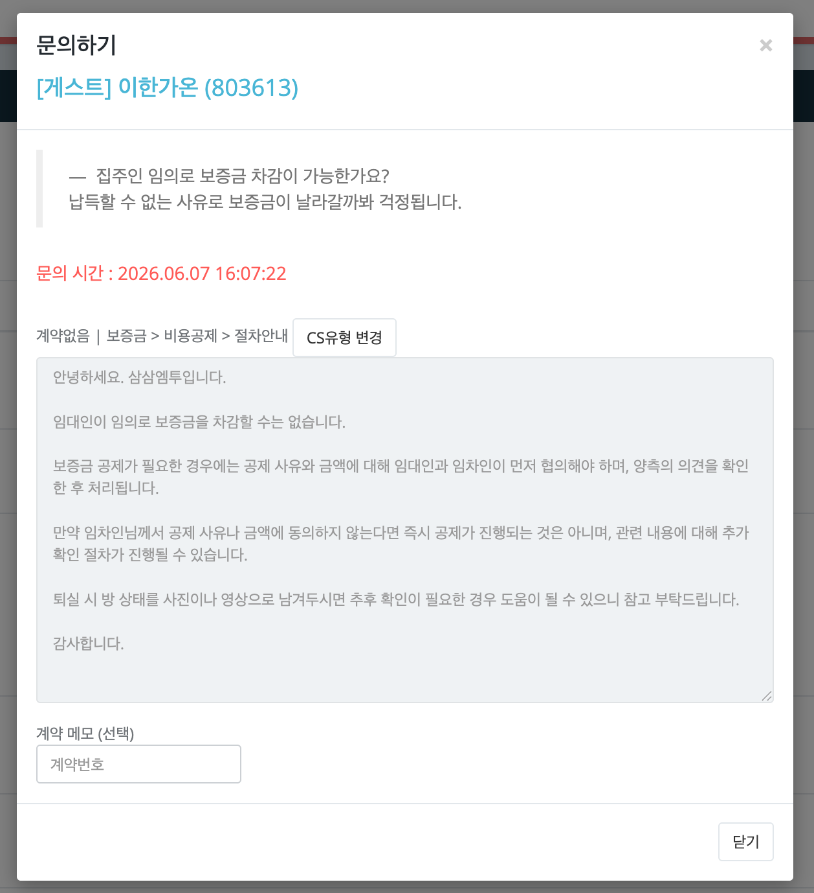
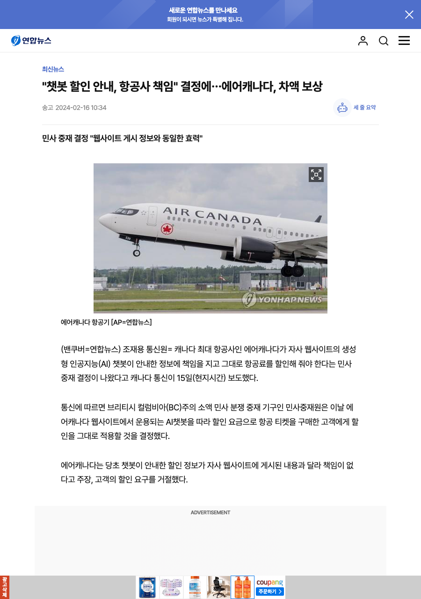

| 신입사원에게… | = 데이터 형식 | 모델이 바뀌나? |
|---|---|---|
| 📒 회사 매뉴얼을 쥐여준다 | 🔎 지식베이스 (RAG) | ❌ |
| 🎓 교육시켜 베테랑으로 키운다 | 🎭 모델 학습 (파인튜닝) | ⭕ |
| 📋 수습 평가로 점검한다 | ✅ 평가 (보너스) | ❌ |
📒 신입사원(AI)에게 회사 매뉴얼을 쥐여주기
문서를 깔끔하게 정리
(최신 · 완성 · 명확)
AI가 찾아 쓰게 연결하기
(RAG 구축)






🎓 신입사원을 가르쳐 베테랑으로 키우기
좋은 사례를 잘 쌓기
(정확 · 맥락 · 최신)
학습(파인튜닝) 돌리기
(쌓인 데이터로)


| 챕터 B 조건 | 우리 전화상담 방식이 푸는 법 |
|---|---|
| ① 정확·최신 | 실무자가 확인·수정 → 틀린 답 걸러내고 최신 정책으로 검증 |
| ② 상황·근거 | 통화엔 고객 상황·문의 배경이 통째로 담김 → "Q&A만" 한계를 메움 |
| ③ 고르고 깔끔 | AI 유형 분류로 편식 확인·보정 + 형식 통일 → 바로 학습셋 |
정답이 있는 문제
(질문 + 모범답) 모으기
채점·정확도 측정
자동화하기
개인정보·기밀 문서를 올리면 → 봇이 그대로 인용·노출 가능
개인정보가 가중치에 박히면 사실상 회수 불가 (한 번 배우면 못 지움)
